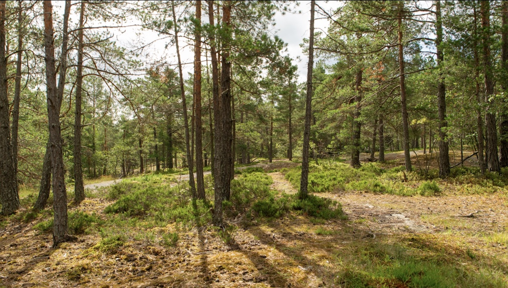

Upptäck natur!

Majroskogens naturreservat
Endast 8–10 minuters promenad från Gubbängens centrum erbjuder reservatet fina promenadstigar, utsiktsberg och grillplatser.
Din guide till Gubbängen!

Endast 8–10 minuters promenad från Gubbängens centrum erbjuder reservatet fina promenadstigar, utsiktsberg och grillplatser.